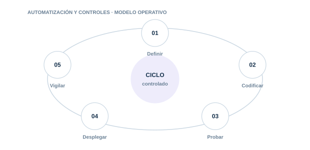

13 · PILAR
Automatización y controles
Automatizar controles repetibles sin perder supervisión, trazabilidad ni capacidad de excepción.

Directorio del pilar5 guías · acceso directo
13.0113.0213.0313.0413.05
Terraform
Despliega componentes de IA con configuraciones revisables y reproducibles.
Python
Automatiza inventario. validación. monitorización y evidencias de IA.
PowerShell
Inspecciona Azure AI. Entra ID. roles. identidades y configuración.
Políticas como código
Convierte requisitos en validaciones automáticas y bloqueos controlados.
Orquestación y alertas
Conecta señales. tickets. aprobaciones y respuesta mediante flujos auditables.
01
DefinirControl y evidencia aplicable
02
CodificarControl y evidencia aplicable
03
ProbarControl y evidencia aplicable
04
DesplegarControl y evidencia aplicable
05
VigilarControl y evidencia aplicable
Cada guía incluye explicación, implantación, controles, evidencias, errores habituales, métricas y referencias.